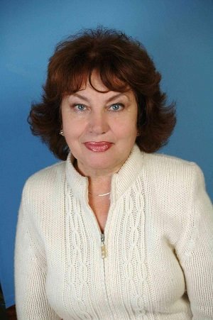
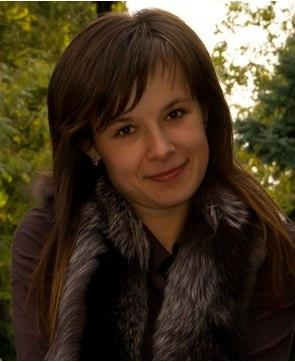
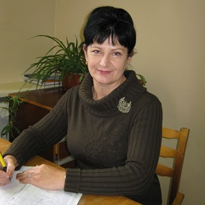
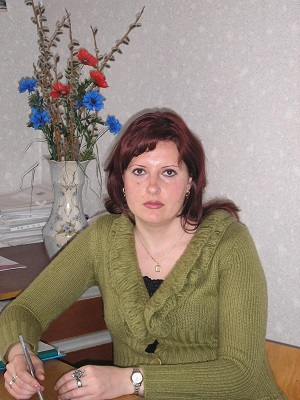
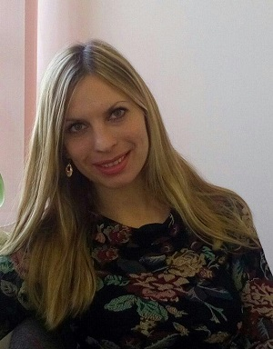

Об университете
В Севастопольском государственном университете успешно работает и развивается институт ядерной энергии и промышленности, в состав которого входит кафедра радиоэкологии и экологической безопасности. Институт расположен в уникальном регионе на юге Крыма в г. Севастополе, на берегу живописной лагуны Севастопольской бухты Черного моря – в местечке «Голландия». Здание института было построено для размещения Морского кадетского корпуса и для обучения в нем сына последнего русского царя царевича Алексея. Обучение в институте располагает к полноценному получению современного образования европейского уровня, гармоничному развитию личности в условиях здорового курортного микроклимата.
О специальностях
Кафедра "Радиоэкология и экологическая безопасность"
Кафедра Радиоэкологии и экологической безопасности проводит подготовку специалистов способных успешно работать в области экологии и природопользования, во всех отраслях производства, науки, образования и управления, обладающих представлениями о современных глобальных и региональных экологических проблемах, путях выхода из них, основных международных и федеральных программах в сфере экологической экономики и политики, владеющих социально-личностными, инструментальными и общенаучными компетенциями, навыками сбора и обработки информации о состоянии окружающей среды. Подготовка студентов на кафедре осуществляется за счет средств государственного бюджета и на коммерческой основе. Выпускникам, обучавшимся за счет средств государственного бюджета по заказу предприятий и учреждений, после обучения гарантируется трудоустройство, а обучавшимся на коммерческой основе - выдается документ о свободном трудоустройстве. На сегодняшний день выпускники кафедры работают во многих отраслях народного хозяйства, в отделах охраны окружающей среды, в т.ч. на предприятиях Госкорпорации «Росатом». Выпускники кафедры востребованы в государственных испольнительных, контролирующих и надзорных органах, научно-исследовательских институтах РАН и ФАН0, экологической службе Вооруженных сил РФ. Лучшие выпускники кафедры имеют возможность продолжить обучение в аспирантуре ИЯЭиП и различных НИИ.
Кафедра «Радиоэкология и экологическая безопасность» осуществляет подготовку бакалавров по направлениям:
• 05.03.06 "Экология и природопользование", профиль - Экологическая безопасность
• 20.03.02 "Природообустройство и водопользование", профиль - Комплексное использование и охрана водных ресурсов
Магистров по направлению:
• 05.04.06 " Экология и природопользование", профиль - Экологическая безопасность, профиль - Радиоэкология
Для обеспечения высокого качества учебного процесса и проведения научных исследований на кафедре
радиоэкологии и экологической безопасности имеется 3 специализированные лаборатории, оснащенные современными
приборами и оборудованием, лекционные аудитории, оснащенные мультимедийным оборудованием.
Абитуриенту
Направления подготовки специалистов
Бакалавр направления подготовки 05.03.06 – «Экология и природопользование», профиль Экологическая безопасность;
Магистр направления подготовки 05.04.06 - "Экология и природопользование", профиль - Экологическая безопасность, профиль - Радиоэкология
Форма обучения бакалавр:
• очная (бюджетная, коммерческая), срок обучения – 4 года;
• заочная (бюджетная, коммерческая), срок обучения – 5 лет.
Форма обучения магистр:
• очная (бюджетная, коммерческая), срок обучения –2 года;
• заочная (бюджетная, коммерческая), срок обучения – 2 года 3 месяца.
Компетенции, которые приобретает выпускник в процессе обучения:
- Проведение пробоотбора и пробоподготовки объектов окружающей среды;
- Определение физико-химических параметров объектов окружающей среды,
обоснование физико–химических методов научно – исследовательскими расчетами;
- Расчет выбросов, сбросов и оценка воздействия на окружающую среду антропогенной деятельности человека;
- Научно-исследовательская работа в лаборатории (проведение эксперимента).
Должности, которые может занимать выпускник кафедры:
- инженер по охране окружающей среды;
- эксперт-эколог;
- эколог;
- инженер-радиолог;
- инженер по радиационной безопасности.
После окончания обучения выпускники могут работать:
- Главное управление природных ресурсов и экологии города Севастополя;
- Государственные исполнительные, контролирующие и надзорные органы;
- Предприятия государственной корпорации «Росатом»;
- Предприятия осуществляющие деятельность в сфере обращения с отходами;
- Предприятия осуществляющие деятельность в сфере коммунального и промышленного водоснабжения, отвода и очистки сточных вод;
- Предприятия осуществляющие деятельность в сфере мелиорации, рекультивации и охраны земель различного назначения;
- Природно-заповедные фонды РФ (ООПТ);
- Научно-исследовательские институты РАН и ФАНО;
- Экологическая служба Вооруженных Сил РФ.
Бакалавр направления подготовки 20.03.02 "Природообустройство и водопользование", профиль - Комплексное использование и охрана водных ресурсов
Форма обучения:
• очная (бюджетная, коммерческая), срок обучения – 4 года;
• заочная (бюджетная, коммерческая), срок обучения – 5 лет.
Компетенции, которые приобретает выпускник в процессе обучения:
- Проведение пробоотбора и пробоподготовки объектов окружающей среды;
- Принятие профессиональных решений при строительстве и эксплуатации объектов природообустройства
и водопользования;
- Использование положений водного и земельного законодательства и правил охраны природных ресурсов
при водопользовании и обустройстве природной среды;
- Оперирование техническими средствами при осуществлении работ по природообустройству и водопользованию,
при измерении основных параметров природных и технологических процессов.
Должности, которые может занимать выпускник кафедры:
- инженер по охране окружающей среды;
- эксперт-эколог;
- эколог;
- инспектор по охране окружающей среды;
После окончания обучения выпускники могут работать:
- Главное управление природных ресурсов и экологии города Севастополя;
- ГУПС «Водоканал»;
- Канализационно-очистные сооружения;
- Государственные исполнительные, контролирующие и надзорные органы;
- Предприятия государственной корпорации «Росатом»;
- Предприятия осуществляющие деятельность в сфере обращения с отходами;
- Предприятия осуществляющие деятельность в сфере коммунального и промышленного водоснабжения, отвода и очистки сточных вод;
- Предприятия осуществляющие деятельность в сфере мелиорации, рекультивации и охраны земель различного назначения;
- Природно-заповедные фонды РФ (ООПТ);
- Научно-исследовательские институты РАН и ФАНО;
- Экологическая служба Вооруженных Сил РФ.
Руководящие документы о поступлении:
- Календарный план приемной кампании
- Основная информация по правилам поступления на бакалавриат и специалитет
- Положения о приемной комиссии
 Положение об экзаменационных комиссиях
Положение об экзаменационных комиссиях
- Положение об апелляционных комиссиях
Условия приема (бакалавриат, специалитет):
Вступительные испытания 05.03.06 «Экология и природопользование»
- при приеме на общих основаниях: География; Математика; Русский язык.
- при приеме иностранных граждан и лиц без гражданства: География; Математика.
Количество бюджетных мест на очной форме обучения - 25
Количество мест по договорам об оказании платных образовательных услуг - 20
Вступительные испытания 20.03.02 «Природообустройство и водопользование»
- при приеме на общих основаниях: Математика; Физика; Русский язык.
- при приеме иностранных граждан и лиц без гражданства: Математика; Физика.
Количество бюджетных мест на очной форме обучения - 17
Количество мест по договорам об оказании платных образовательных услуг - 15
Условия приема (магистратура):
Вступительные испытания 05.04.06 «Экология и природопользование»
- при приеме: профессиональные испытания
Количество бюджетных мест на очной форме обучения - 10
Количество мест по договорам об оказании платных образовательных услуг - 5
Студентам предоставляется общежитие. Распоряжением Председателя Правительства РФ от 28.04.2016 года N° 793-Р при СевГУ создана военная кафедра. Будет проводиться военная подготовка по трем военно-учетным специальностям (ВУС) для подготовки офицеров запаса, по одной ВУС для подготовки сержантов запаса, по одной ВУС для подготовки рядовых запаса.
Основные перспективные направления научной деятельности:
• Разработка новых процессов умягчения и деминерализации воды для экологически безопасных водоциркуляционных систем;
• Стабилизационная обработка воды для экологически безопасных систем водопотребления в энергетике;
• Исследование радиоэкологической и радиационной безопасности в месте расположения ядерного объекта;
• Фитомониторинг, биоиндикация и биотестирование;
• Анализ состояния морских экосистем;
• Исследование пространственно-временной изменчивости параметров поля биолюминесценции и их сопряженности с факторами среды.
Материально-техническое оснащение кафедры
Лабораторное оборудование
Учебные лаборатории кафедры оснащены современным оборудованием и наглядными пособиями,
которые используются в учебном процессе и в научно-исследовательской работе сотрудников кафедры РЭиЭБ.
Ниже представлены лишь некоторые из приборов и оборудования, используемых в образовательном процессе на кафедре.
Фотоколориметр КФК-3-01
Назначение: предназначены для измерения коэффициента пропускания и оптической
плотности прозрачных жидкостных растворов, а также для определения скорости изменения
оптической плотности веществ и концентрации растворов после предварительной градуировки
фотометров потребителем.
Область применения: применяется в сельском хозяйстве, на предприятиях водоснабжения,
в металлургической, химической, пищевой промышленности, в лабораториях медицинских
учреждений, экологической службе и других отраслях.
рН-метр 150 МИ
Назначение: предназначены для измерения показателя активности ионов водорода (pH),
показателя активности других одновалентных и двухвалентных ионов (рХ), окислительно-восстановительного
потенциала (Eh) и температуры (t) водных растворов и непосредственного измерения pH мяса и мясопродуктов.
Область применения: применяется для проведения измерений в лабораторной практике, а также для
оперативных измерений на предприятиях пищевой промышленности и в других отраслях промышленности,
в том числе, в теплоэнергетике.
Спектрофотометр СФ - 2000
Назначение: предназначен для измерения спектральных коэффициентов
направленного пропускания жидких и твердых прозрачных образцов.
Область применения: применяется в лаборатории научно- исследовательских,
промышленных, фармацевтических, экологических и других учреждений.
Психрометры аспирационные
Назначение: предназначены для измерения температуры воздуха и температуры "смоченного"
термометра с целью последующего вычисления по психрометрическим таблицам параметров влажности воздуха.
Область применения: применяется в лаборатории научно-исследовательских,
промышленных, экологических и других учреждений.
Газоанализатор ПГА-ВМП
Назначение: предназначены для покачивания исследуемой газовой смеси через
индикаторные трубки при экспресс-определении.
Область применения: применяется в производственных лабораториях.
Учебный план
Краткая характеристика учебного плана (привлекательные стороны программы):
Направленность на получение выпускниками широкого спектра знаний, необходимых для решения как общих,
так и специфических задач в области природопользования, радиоэкологии и охраны окружающей среды; их фундаментальную
подготовку в области современных средств обнаружения и локализации загрязняющих веществ в объектах окружающей среды,
что создает
хорошие предпосылки для эффективного применения приобретенных знаний, умений и навыков на практике.
Краткая характеристика учебного плана (профессионально-ориентированные вариативные дисциплины):
Специальное природопользование, метрологические основы экологии, радиоэкология, экономика природопользования, радиоэкологические основы радиационной безопасности, экологическая токсикология, радиобиология, экологическая безопасность, технология очистки промышленных сбросов, инструментальные методы анализа в экологии, правовые основы природопользования и охраны окружающей среды, нормирование и снижение загрязнения окружающей среды, теоретические основы химических процессов, радиохимия и радиометрия, обращение с радиоактивными отходами, радиационные источники, радиационная токсикология, технология очистки промышленных выбросов.
Краткая характеристика учебного плана (профессионально-ориентированные базовые дисциплины):
- модуль - основы экологии (общая экология, органическая химия в экологии, заповедное дело, экология человека);
- модуль - учение о сферах земли (гидрология, картографические методы в экологии, ландшафтоведение);
- модуль - прикладная экология (экологическая экспертиза, экологический мониторинг, техногенные системы и
экологический риск, оценка воздействия на окружающую среду, организация управления
в экологической деятельности,
химические методы анализа водных объектов окружающей среды, урбоэкология, безопасность жизнедеятельности).
Практика
О производственной практике студентов:
В процессе обучения студенты проходят производственную практику на предприятиях города Севастополя,
города Ялты, города Бахчисарай, Атомных станциях Российской Федерации:
• АО "Балаклавское Рудоуправление им. А.М. Горького".
• Государственное бюджетное учреждение Республики Крым "Бахчисарайское межрайонное управление водного хозяйства".
• Департамент архитектуры и градостроительства, Республика Крым, г. Ялта.
• Управление лесного и охотничьего хозяйства города Севастополя.
• Севастопольский морской аквариум.
• ФГБНУ Институт морских биологических исследований им. А.О. Ковалевского РАН
• АО "Бахчисарайский комбинат "Стройиндустрия"
• Атомные электростанции Российской Федерации
Состав кафедры
«Приходя в гости к природе, не делай ничего, что счёл бы неприличным делать в гостях». Арманд Д.Л.
Общий стаж работы - 26 лет. Стаж работы по специальности - 21 год.
Преподаваемые дисциплины:
• Химические методы анализа водных объектов окружающей среды
• Теоретические процессы химических процессов
• Технология очистки промышленных сбросов
• Химия
«Человечество на Земле и окружающая его живая и неживая природа составляют нечто единое, живущее по общим законам природы». Вернадский В.И.
Общий стаж работы - 48 лет Стаж работы по специальности - 48 лет
Возглавляет работу с магистрами и осуществляет руководство магистерскими диссертациями
«Без знания основ радиоэкологии и её законов современное образование, как общее,
так и специальное в области энергетики и, особенно, атомной энергетики полноценным быть не может».
Общий стаж работы - 63 года Стаж работы по специальности - 57 лет
Преподаваемые дисциплины:
• Радиоэкология
• Основы радиоаналитических методов в радиоэкологии
• Радиоэкология (по отраслям)
• Радиоэкологический мониторинг
«Никакие материальные блага не способны заменить здоровой среды жизни». Реймерс Н.Ф.
Общий стаж работы - 45 лет Стаж работы по специальности - 31 год
Преподаваемые дисциплины:
• Экологическая токсикология
• Радиобиология
• Радиационная токсикология
• Радиационные источники
• Биологическое действие ИИ
• Реабилитация радиационно-загрязненных территорий
• Радиационные источники и оценка их влияния на окружающую среду
«Поведение человека в природе – это и зеркало его души». Зелинский К.Л.
Общий стаж работы - 18 лет Стаж работы по специальности - 7 лет
Преподаваемые дисциплины:
• Нормирование и снижение загрязнения окружающей среды
• Техногенные системы и экологический риск
• Экологический мониторинг
• Управление экологической безопасностью
«Вода – больший дефицит, чем энергия. У нас есть альтернативные источники энергии, но альтернативы воды нет». Одум Юджин.
Общий стаж работы - 17 лет Стаж работы по специальности - 7 лет
Преподаваемые дисциплины:
• Урбоэкология
• Утилизация и рекуперация отходов
• Технология очистки промышленных сбросов
• Расчет и проектирование систем обеспечения безопасности
• Методология и организация научных исследований
«Чтобы беречь Землю, природу, надо её полюбить, чтобы полюбить, надо узнать, узнав – невозможно не полюбить». Сладков А. Н.
Общий стаж работы - 15 лет. Стаж работы по специальности - 15 лет.
Преподаваемые дисциплины:
• Заповедное дело
• Ландшафтоведение
• Современные проблемы экологии и природопользования
«Проблемы образования, и особенно экологического образования, имеют абсолютный приоритет перед всеми другими целями общества».
Общий стаж работы - 48 лет Стаж работы по специальности - 12 лет
Преподаваемые дисциплины:
• Метрологические основы экологии
• Инструментальные методы анализа в экологии
• Экологическая стандартизация и сертификация
• Инженерные средства защиты окружающей среды
• Расчет и проектирование систем обеспечения безопасности
«Экология – мера относительная, величина измеряемая человеческой глупостью».
Общий стаж работы - 19 лет Стаж работы по специальности - 15 лет
Преподаваемые дисциплины:
• Экология, блок Основы экологии
• Оценка воздействия на окружающую среду
• Экологическая экспертиза
• Экспертиза безопасности
• Экологический менеджмент и аудит
• Системный анализ качества
«Современная экология – это наука о том, как передать Природу, наш общий дом, нашим детям и внукам, чтобы им в нем было жить лучше и удобней, чем нам».
Общий стаж работы - 41 год Стаж работы по специальности - 20 лет
Преподаваемые дисциплины:
• Технологии очистки промышленных выбросов
• Технологии основных производств и промышленная экология
• Рекультивация загрязненных территорий
• Энергосберегающие технологии
• Правовые аспекты радиоэкологии
• Экологические аспекты применения нанотехнологий и биотехнологий
• Малоотходные и ресурсосберегающие технологии в энергетике
«Спорьте, ошибайтесь, заблуждайтесь, но, ради бога, размышляйте, и хоть криво, да сами» Г.Е. Лессинг.
Общий стаж работы - 39 лет Стаж работы по специальности - 20 лет
Преподаваемые дисциплины:
• Геология
• Почвоведение
• Экология человека
• Основы микробиологии и биотехнологии
• Биология
Как сказал английский зоолог, писатель-анималист, защитник природы Даррелл Джеральд Малколм:
«Скорость, с какой развивается цивилизация, и, следовательно, скорость, с какой люди опустошают нашу удивительно
прекрасную планету, растёт, из месяца в месяц. Долг каждого – попытаться предотвратить ужасное осквернение нашего мира,
и в эту борьбу каждый может внести свой, пусть маленький, пусть скромный вклад», - а мы поможем Вам осуществить Ваш вклад.
Общий стаж работы - 14 лет Стаж работы по специальности - 9 лет
Преподаваемые дисциплины:
• Радиоэкологический основы радиационной безопасности
• Мониторинг безопасности
• Технологические процессы и экологическая безопасность ядерно-топливного цикла
«Не природе нужна наша защита. Это нам необходимо её покровительство: чистый воздух, чтобы дышать, кристальная вода, чтобы пить, вся природа, чтобы жить». Реймерс Н. Ф.
Общий стаж работы - 14 лет Стаж работы по специальности - 11 лет
Преподаваемые дисциплины:
• Геология
• География
• Экология
«Как прекрасна Земля и на ней человек». Есенин С.А.
Общий стаж работы - 16 лет Стаж работы по специальности - 11 лет
Преподаваемые дисциплины:
• Специальное природопользование
• Организация управления в экологической деятельности
«"Зеленый" станет президентом не раньше, чем проголосуют деревья». Колюш.
Общий стаж работы - 13 лет Стаж работы по специальности - 5 лет
Преподаваемые дисциплины:
• Безопасность жизнедеятельности
«Жаль, что деревья не раздают WiFi, тогда их сажали бы на каждом шагу. А так они всего лишь
дают кислород, без которого человек не может жить»
Начала преподавательскую деятельность в 2015 году после окончания обучения в аспирантуре.
Преподаваемые дисциплины:
• Безопасность жизнедеятельности
Инженерно-лаборантский состав кафедры
Cтаж работы по специальности - 10 лет
Общий стаж работы - 8 лет Cтаж работы по специальности - 4 года
Общий стаж работы – 48 лет; стаж работы по специальности - 11 лет
ПРИГЛАШАЕМ НА УЧЕБУ!
>Контактные данные
299015, г. Севастополь, ул. Курчатова, 7
Зав. каф. РЭиЭБ +7 978 795-92-67